SCALE.Model
Basic concepts
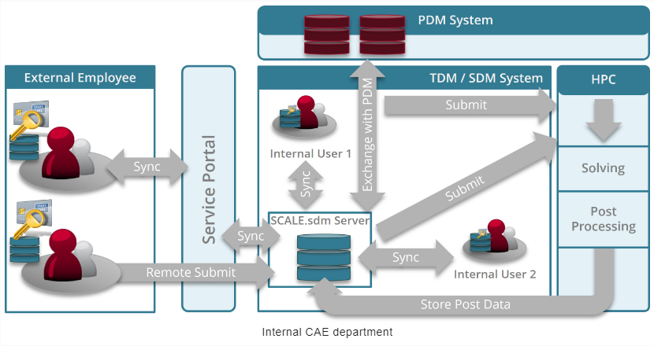
Workflow, teamwork and synchronization
Synchronization
데이터는 SCALE.sdm 서버 중앙에 보관되며, Model 클라이언트는 데이터의 로컬 복사본을 다운로드 합니다. 복사본은 Model 서버와 정기적으로 동기화되며, 이는 클라우드와 같은 인프라에 해당합니다. 로컬 작업 복사본을 기반으로 오프라인에서 작업할 수 있으며, 데이터 전송 및 데이터 저장을 위한 암호화(2단계 인증 및 암호화)를 구성하여 보안을 보장할 수 있습니다.
Offline / online
사용자는 서버와 정기적으로 동기화되는 로컬 데이터로 작업합니다. 일시적으로 서버에 연결할 수 없는 경우에도 사용자는 계속 작업할 수 있습니다(오프라인 모드). 서버 연결이 다시 설정되는 즉시 로컬 수정 사항이 서버에 업로드됩니다.
Version management
버전 관리는 Model로 관리되는 데이터의 변경 사항을 추적할 수 있습니다. 모든 변경 사항을 기록하여 누가 언제 무엇을 변경했는지 추적할 수 있으며 이전 상태와 새 상태를 비교할 수 있습니다. 또한 필요에 따라 이전 상태를 복원할 수 있습니다.
Model의 거의 모든 개체들은 다음을 포함하는 버전으로 관리됩니다.
Model data
Solver files
Preprocessor files
Geometry
Control and configuration files
Scripts
Parameter tables
Folders
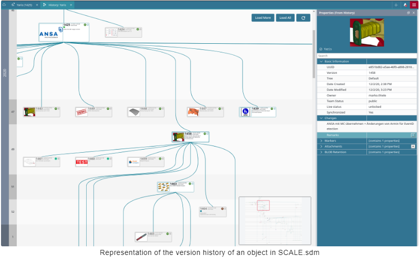
Lock - modify - unlock
일반적으로 PDM 시스템에서 데이터 개체는 사용자가 요청하는 즉시 다른 사용자를 위해 잠깁니다. 이 잠금-수정-잠금 해제 방식을 사용하면 한 번에 한 명의 사용자만 데이터를 수정할 수 있지만 데이터 일관성(버전 기록에서 분기되지 않음)이 보장됩니다.
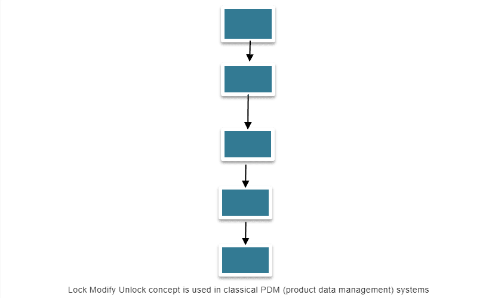
Copy - modify - merge
Model에서는 기본적으로 복사-수정-병합 접근 방식을 따릅니다. 이 개념을 사용하면 여러 사용자가 해당 객체의 복사본을 만들어 객체를 동시에 변경할 수 있습니다. 따라서 하나의 (부모) 객체에서 여러 개의 (자식) 객체를 만들 수 있습니다. 이러한 (하위) 개체를 하나의 개체로 병합하기 위해 Model은 소위 비교 및 병합 기능을 제공하며, 이를 통해 변경 사항을 병합할 수 있습니다.
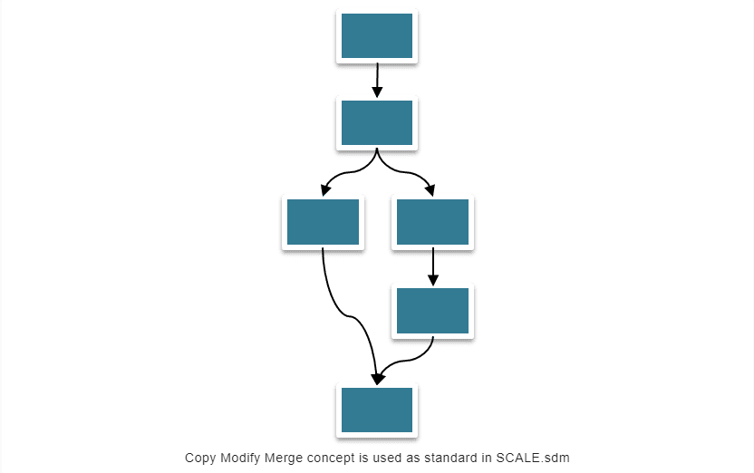
복사-수정-병합 방법은 두 가지 상태를 허용합니다.
public(공개): 공개 상태의 개체는 더 이상 편집할 수 없습니다. 이러한 개체를 편집하면 자동으로 비공개 상태의 새 개체가 생성됩니다.
private(비공개): 비공개 상태의 개체는 소유자만 편집할 수 있습니다. 소유자는 언제든지 비공개 개체를 공개 상태로 변경할 수 있습니다. 공개 및 비공개 개체는 모두 모든 사람에게 표시됩니다. 즉, 모든 사용자가 누가 어떤 개체에 대해 작업하고 있는지 볼 수 있습니다.
Live mode
Model에서 기존의 복사-수정-병합 방식에서 벗어나 특정 프로젝트 단계에서 새 버전을 만들지 않고 그룹화된 구성 요소(풀 버전)에 대해 동시에 작업할 수 있습니다. 이를 위해 구성 요소는 Model에서 라이브 모드라는 이름을 가진 잠금-수정-잠금해제 모드에서 편집됩니다. 변경한 내용은 새 버전을 만들지 않고도 작업 그룹의 다른 모든 사용자에게 즉시 표시됩니다. 프로젝트의 이 단계가 완료되면 라이브 모드 그룹을 공개로 설정하여 일반 모드(복사-수정-병합)로 원활하게 전환할 수 있습니다.
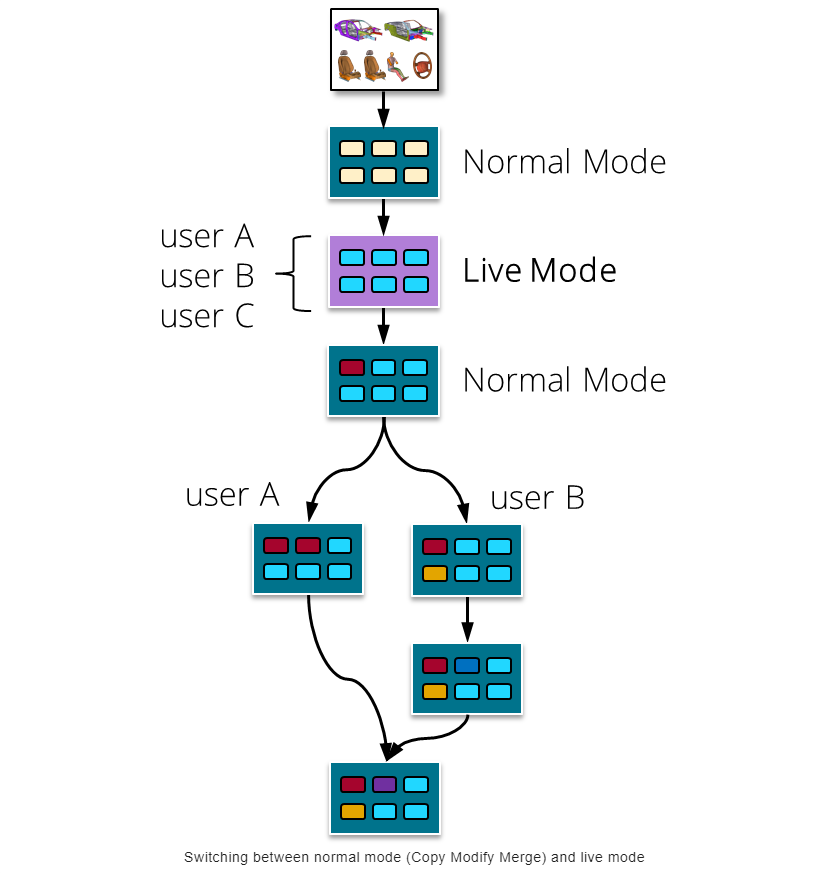
Note
라이브 모드에서는 버전 기록이 일반 모드(복사 수정 병합)와 같은 정도로 문서화되지 않습니다. 라이브 모델은 클라이언트가 서버에 연결할 수 있는 경우에만 사용할 수 있습니다.
Basic principles of the modular approach
시뮬레이션에서 모듈식 접근 방식의 아이디어는 전체 모델의 개별 부분을 언제든지 교체하거나 여러 부분 모델에서 서로 다른 전체 모델을 조립할 수 있도록 하는 것입니다.
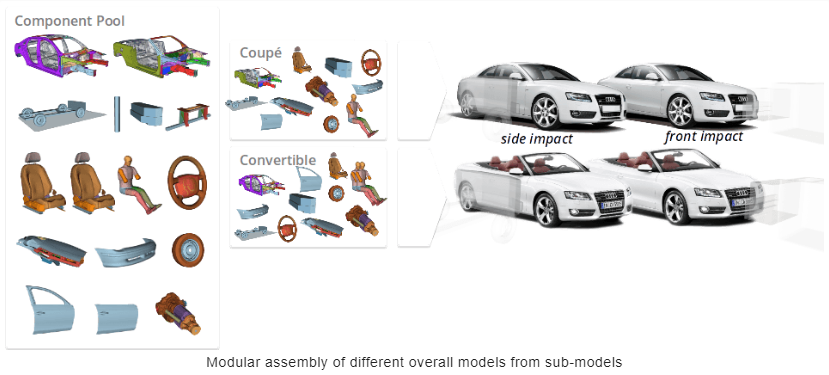
Integration of external CAE tools
Model은 다양한 CAE 프로세스와 CAE 툴의 통합을 위한 여러 애플리케이션 인터페이스를 제공합니다. Model에서 외부 프로그램으로 파일을 직접 열어 그곳에서 처리할 수 있습니다. 처리가 완료되고 파일이 닫히면 새 버전의 객체가 자동으로 Model로 다시 임포트되고 사용자에게 히스토리 주석과 함께 변경 사항을 문서화하도록 요청합니다.
Model에서 통합될 수 있는 외부 프로그램은 다음과 같습니다.
Pre-and post-processors such as ANSA, Hypermesh, Primer, ADAMS
Text editors such as NEdit, gvim, Notepad++, UltraEdit
Custom user scripts
Optimisation tools
Cooperation with external partners
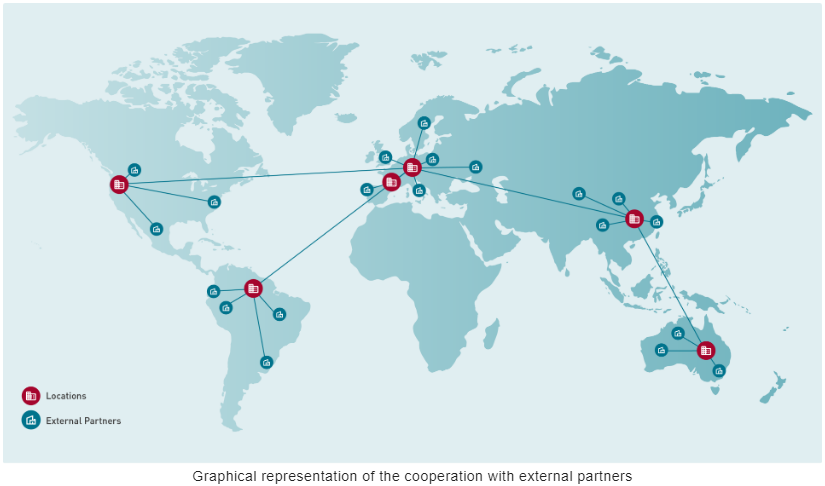
기업들은 종종 회사 내부 네트워크에 직접 통합되지 않은 외부 서비스 제공업체에 개발 활동을 아웃소싱합니다. 외부 파트너는 서비스 포털을 통해 회사 네트워크와 Model 서버에 연결되는 것이 바람직합니다. 이렇게 하면 모든 관련 데이터가 외부 사용자와 자동으로 동기화됩니다. 외부 서비스 제공업체는 내부 직원과 동일한 개발 환경을 사용할 수 있습니다. 대역폭이 낮은 경우에도 외부 사용자는 고성능으로 자신의 데이터에 액세스할 수 있으며 주어진 개발 프로세스에 직접 참여할 수 있습니다.
외부 직원이 (내부) 중앙 Model 서버에 직접 액세스할 수 없는 경우 작업 상태를 자동으로 동기화할 수 없습니다. 그럼에도 불구하고 일관되고 가장 중요한 협업 작업 절차를 가능하게 하기 위해 Model은 외부 파트너의 IT 시스템 내에서 보조 서버라고 하는 로컬 Model 서버를 실행할 수 있는 기능을 제공합니다.
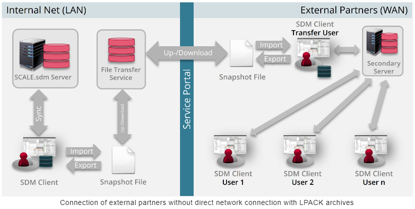
이러한 시나리오에서는 두 개의 Model 서버를 구분합니다:
기본 Model 서버는 내부 IT 내에서 작동합니다. 이 서버에만 중앙 구성을 변경하고 (글로벌) 버전 번호를 할당할 수 있는 권한이 있습니다.
외부 파트너의 IT 내에서 작동하는 보조 Model 서버는 주 서버와 동일한 방식으로 작동하지만 제한적이며 중앙 구성 등을 변경할 수 있는 권한이 없습니다.
이러한 시나리오에서 작업 상태의 동기화는 오프사이트 사용자 클라이언트에서 메인 서버로(또는 그 반대로) 직접 이루어지지 않고 전송 사용자를 통해 이루어집니다. 전송 사용자는 메인 서버와 보조 서버 모두에 알려져 있으며 내부 및 외부 Model 인프라 간의 인터페이스 역할을 합니다.
외부 파트너 사이트의 다른 사용자도 보조 서버에 등록할 수 있지만 이러한 사용자는 보조 서버에만 알려져 있습니다. 데이터를 메인 서버에 동기화하는 동안 이러한 순수 로컬 사용자는 모두 전송 사용자에게 매핑됩니다. 즉, 순전히 로컬 사용자가 변경한 내용이 마치 전송 사용자가 변경한 것처럼 메인 서버 측에 표시됩니다. 따라서 외부 파트너의 내부 구조(직원 수, 직원 이름, 근무 시간)에 대한 정보가 공개되지 않습니다.
메인 서버와 보조 서버 인프라 간의 실제 데이터 교환은 소위 LPACK(Model 패키지) 파일을 사용하여 파일 기반으로 이루어질 수 있습니다. 여기에는 모든 파일뿐만 아니라 작업 상태에 대한 모든 변경 사항이 포함되어 있으며, 강력한 비동기 암호화를 사용하여 각 원격 스테이션(메인 서버>보조 서버 또는 그 반대)에서만 열 수 있으므로 보안되지 않은 채널을 통해 전송할 수도 있습니다.
또한 보조 서버와 메인 서버 간에 직접 영구 동기화를 설정할 수 있으므로 LPACK 파일을 통한 전송이 필요하지 않습니다.
보조 서버 섹션에서는 메인 Model 서버에 직접 연결하지 않고 외부 서비스 제공업체를 위한 Model 인프라를 구현하는 방법에 대해 설명합니다.
Getting started
Download a pool
초기 설정 후에는 Model 데이터베이스가 비어 있고 프로젝트(pool)가 표시되지 않습니다. 풀(pool)에 대한 권한이 이미 부여된 경우 서버에서 풀(pool)을 다운로드하여 로컬 데이터베이스에 저장할 수 있습니다. 이 프로세스를 “체크아웃(checkout)”이라고 합니다. 이 작업은 초기 설정 중 또는 이후 언제든지 수행할 수 있습니다. 네비게이션 바(navigation bar)에서 등록된 풀의 트리(tree) 그리고 각 트리(tree)의 버전(version)들을 확인 및 선택할 수 있습니다. 작업하려는 풀 버전(pool version)을 선택하면 선택한 풀 버전(pool version)이 서버에서 다운로드 됩니다. 다운로드가 완료되면 자동으로 해당 pool의 정보가 표시됩니다.
Tip
목록이 상당히 긴 경우 원하는 풀, 트리 또는 버전이 바로 표시되지 않을 수 있습니다. 이 경우 검색 필드에 풀, 트리 또는 버전 이름을 입력하기 시작하면 됩니다. 이렇게 하면 결과 목록이 짧아집니다.
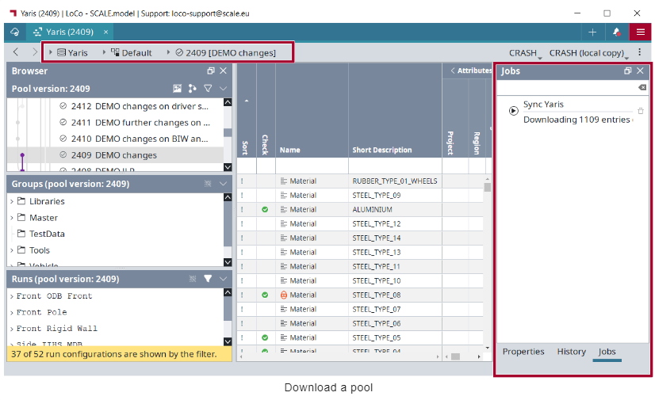
Find your way around
사용자 인터페이스는 다음과 같이 구성되어져 있습니다.
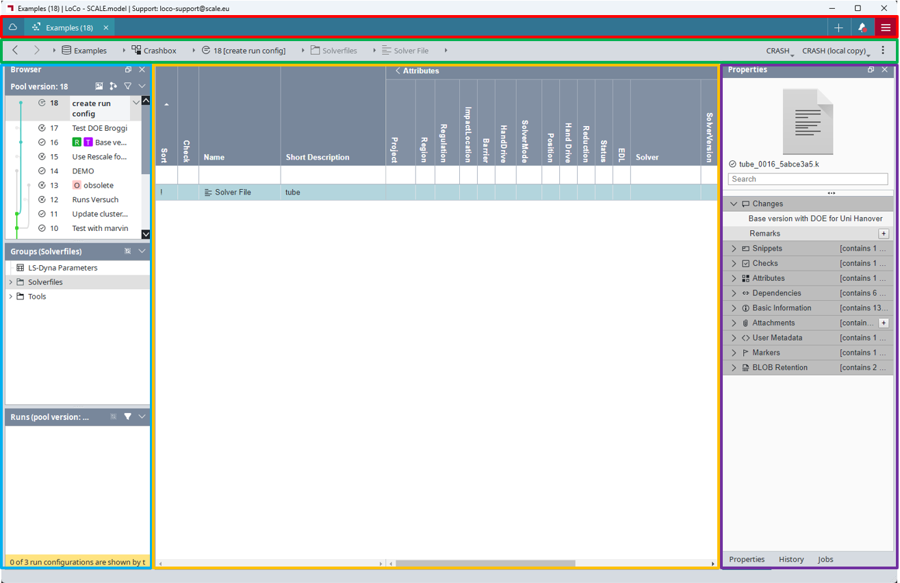
탭 바(Tab bar)
내비게이션 바(Navigation bar)</span
브라우져(Browser)
데이터 테이블(Data table)
속성 탭(Properties tab)
Close and re-open windows
각 창들(windows)은 필요에 따라 닫거나 다시 열 수 있습니다.
내비게이션 바에서 마우스 우 클릭을 하고 컨텍스트(context) 메뉴를 표시합니다.
표시할 창을 체크하거나 해제 합니다.
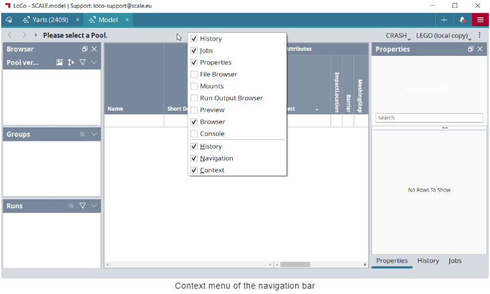
Rearrange the windows
각 창들은 사용자가 원하는 곳에 위치 시킬 수 있습니다.
창은 드래그 앤 드롭으로 이동할 수 있습니다. 이렇게 하려면 창을 탭으로 잡고 원하는 위치로 드래그해야 합니다. 창을 나머지 프레임워크에서 완전히 분리할 수도 있습니다.
여기서 파란색으로 표시된 영역은 가능한 창 위치를 나타냅니다.
여러 개의 창이 같은 위치에 있는 경우 탭으로 그룹화됩니다.
Customize the grid
사용자의 요구에 맞게 그리드(grid)의 외관을 변경(customize)할 수 있습니다.
Toggle columns on and off
데이터 테이블의 각 열에서
 를 클릭합니다.
를 클릭합니다.를 선택합니다.
표시(on) 및 숨김(off) 하고자 하는 열(column)을 체크하거나 해제합니다.
Alternative method
데이터 테이블 빈 공간 혹은 행(row)에서 마우스 우 클릭 합니다.
표시되는 메뉴에서 Show column configuration 항목을 체크합니다.
표시되는 열 목록에서 표시 혹은 숨김 하고자 하는 항목을 체크 및 해제합니다.
작업을 마친 후에는 다시 마우스 우 클릭을 하여 Show column configuration 항목을 체크 해제 합니다.
Rearrange the columns
열이 표시되는 순서를 결정할 수 있습니다. 개별 열을 끌어서 놓기만 하면 필요에 따라 열을 재정렬할 수 있습니다.
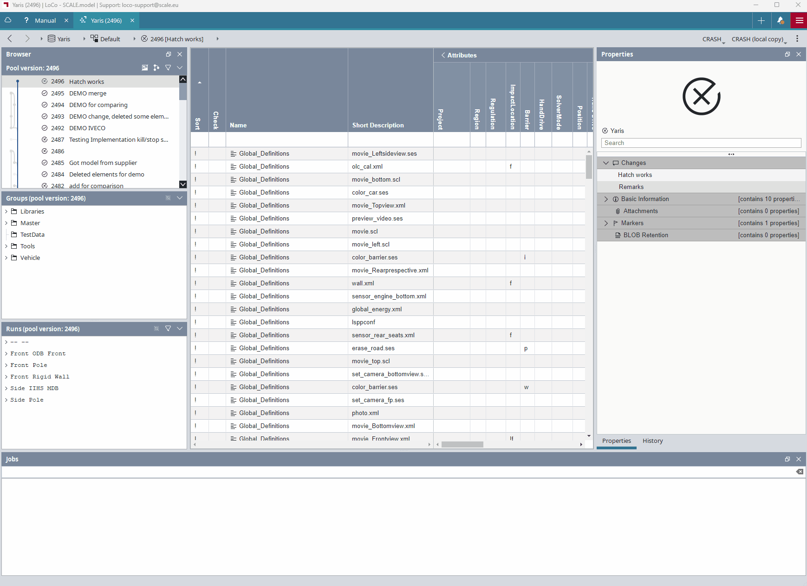
Sort the column content
데이터 테이블에서 열의 이름(header) 우측에 오름차순 ()과 내림차순()를 이용하여 열의 항목들을 분류(sort) 할 수 있습니다.
Sort multiple columns
여러 열을 기준으로 정렬할 수도 있습니다. 예를 들어, 먼저 대상 시장별로 데이터를 정렬할 수 있습니다. 그런 다음 여러 행이 동일한 시장에 적용되는 경우 알파벳 순서로 정렬할 수 있습니다.
첫번째로 분류할 열의 이름(header)를 클릭하여 정렬합니다.
Shift 키를 누르고 두번째 열의 이름(header)를 클릭하여 첫번째 선택했던 열의 분류 순서에서 동일한 항목에 대한 행의 값들 사이의 알파벳 순으로 두번째 선택한 열의 값들을 정렬합니다.
필요에 따라 shift 키를 누른 채 또 다른 열의 이름을 클릭하여 정렬을 반복합니다.
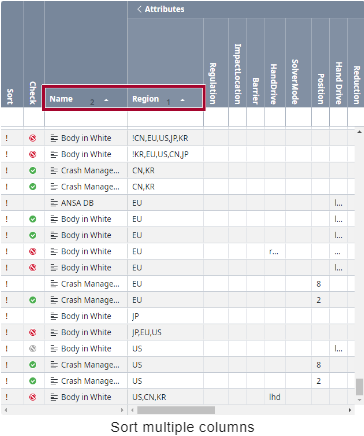
Apply column filters
열 머리글 바로 아래의 빈 셀은 필터입니다. 필터가 설정되어 있지 않으면 셀이 비어 있습니다. 이러한 필터를 사용하여 특정 기준을 충족하는 데이터만 표시할 수 있습니다. 예를 들어 특정 이름을 가진 데이터 행만 표시할 수 있습니다.
Group data by column headers
그룹으로 묶어 표시하기 위해서
를 클릭합니다.나타나는 메뉴에서 Group by [Column name]을 클릭하면 테이블의 데이터들이 그룹으로 묶여 표시됩니다.
필요에 따라 같은 방법으로 두 개 이상의 항목으로 그룹으로 묶어 표시 할 수 있습니다.
그룹을 해제하려면
클릭 후 Ungroup by [Column name]을 선택합니다.
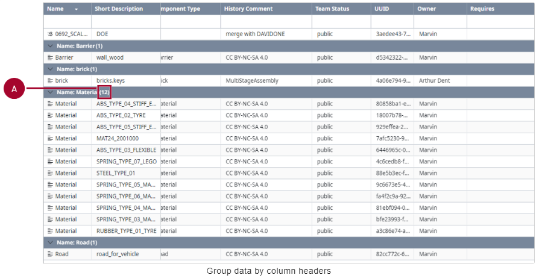
Pin columns
열은 그리드의 왼쪽(A) 또는 오른쪽(B) 가장자리에 고정할 수 있습니다. 고정되지 않은 열은 중앙에 표시됩니다. 이렇게 하면 그리드를 세 개의 영역으로 나눌 수 있으므로 원하는 정보를 더 잘 파악하고 빠르게 액세스할 수 있습니다. 필요한 경우 가로 스크롤 막대를 사용하여 중앙 영역을 좌우로 이동할 수 있습니다.
열의 이름에서
을 클릭합니다.나타나는 메뉴에서 Pin column을 선택하면 3개의 항목(Pin left, Pin right, No pin)이 표시됩니다.
고정하여 배치하고자 하는 방향을 선택하여 선택한 열을 좌 우에 고정합니다.
Adjust the column width
열의 이름에서
을 클릭합니다.나타나는 메뉴에서 Autosize this column을 클릭하면 열의 너비가 자동으로 조정됩니다.
Autosize all columns를 선택하게 되면 모든 열의 너비가 자동으로 조정됩니다.
List of options in the column header context menu
열의 이름에서 를 클릭했을 때 나타나는 메뉴는 다음과 같습니다.
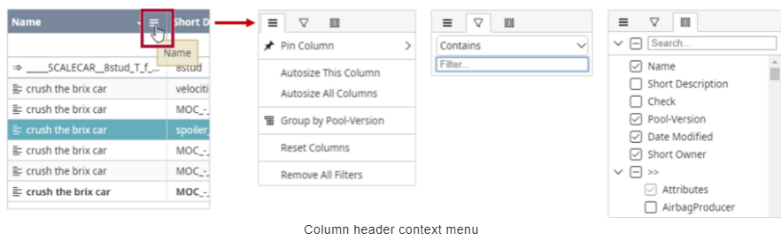
Option |
Explanation |
|---|---|
Pin column |
열(column)을 오른쪽 및 왼쪽으로 고정합니다. |
Autosize this column |
선택한 열의 너비를 자동으로 조정합니다. |
Autosize all columns |
모든 열의 너비를 자동으로 조정합니다. |
Group by |
선택한 열의 같은 데이터끼리 그룹화 되어 표시 됩니다. |
Reset columns |
기본 설정 값으로 테이블을 다시 되돌립니다. |
Remove all filters |
적용된 모든 필터(filter)들이 제거됩니다. |
|
테이블의 데이터 표시에 적용할 필터를 설정합니다. |
테이블에 나타낼 열(column)을 선택합니다. |
Parameters
Parameter table
파라미터 테이블(Parameter table)은 파라미터들 뿐만 아니라 파라미터에 해당하는 값 및 관련된 속성들(attributes)에 대한 편리한 개요(overview)를 제공합니다.
Add parameter table
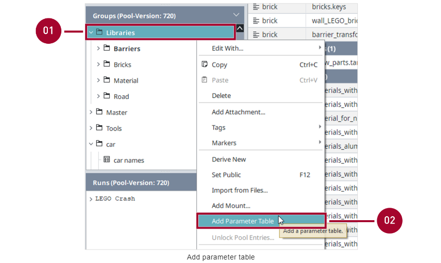
파라미터 테이블을 만들고자 하는 component 그룹을 선택합니다.
마우스 우 클릭으로 표시되는 메뉴에서 Add Parameter Table을 선택합니다.
그 후 기본 지정 파라미터 세트가 있는 비공개 파라미터 목록이 생성됩니다. 비공개 상태는 테이블 지정(A)이 굵은 글씨로 표시되어 있습니다.
마우스 오른쪽 버튼을 클릭하여 열 수 있는 파라미터 테이블의 상황에 맞는 메뉴에서 다음 옵션을 찾을 수 있습니다:
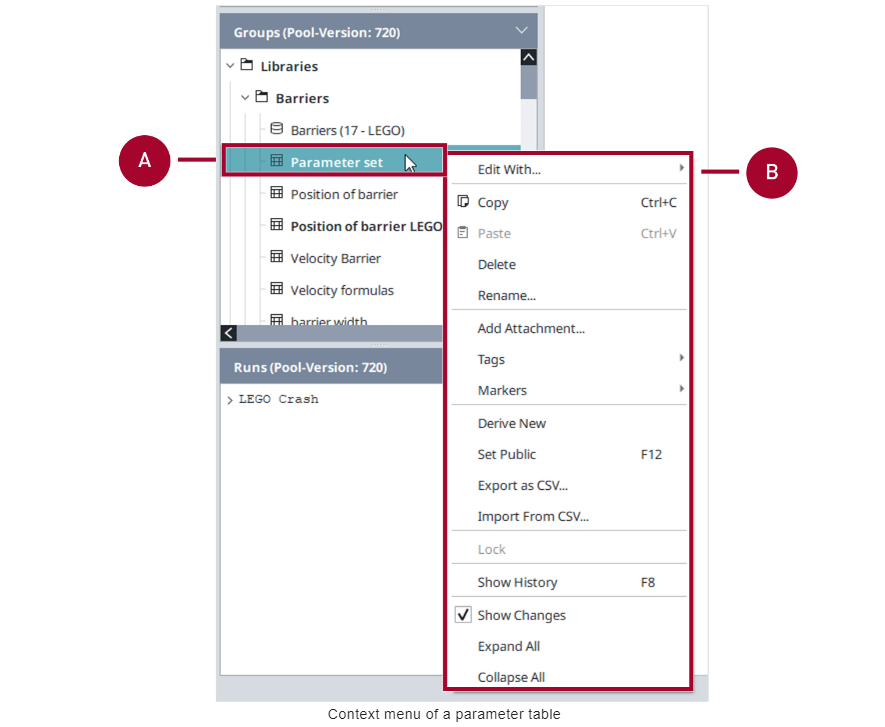
Edit parameter table
파라미터 테이블의 상황에 맞는 메뉴를 통해 Edit With… 메뉴 항목에 접근할 수 있습니다. 그러면 외부 애플리케이션에서 매개변수 테이블의 .csv 표현이 열립니다. 여기에서 파일을 편집할 수 있습니다. 외부 애플리케이션을 닫은 후 Model은 .csv 표현이 변경되었는지 확인하고 파라미터 테이블을 .csv 표현의 콘텐츠로 덮어씁니다.
Copy, paste, delete, rename
생성된 파라미터 테이블에서 마우스 오른쪽 버튼을 클릭하면 나타나는 메뉴에서 언제든지 표를 복사, 붙여넣기 및 이름을 변경할 수 있습니다.
Derive new, set public, export, import
Derive New : 기존 파라미터 테이블에서 새 파라미터 테이블을 파생합니다.
Set Public : 테이블의 상태를 비공개(private)에서 공개(public)으로 변경합니다.
Export as CSV : 파라미터 테이블의 내용을 사용자의 하드 디스크에 .csv 파일로 저장할 수 있습니다. 저장한 .csv 파일은 Model에 연결되지 않고 독립적으로 사용되며, .csv 파일의 내용을 변경하더라도 파라미터 테이블에 영향을 미치지 않습니다.
import from CSV : 파라미터 테이블의 컨텍스트 메뉴를 통해 Import From CSV… 메뉴 항목에 접근할 수 있습니다. 이 메뉴 항목을 클릭하면 사용자의 하드 디스크에 있는 .csv 파일을 선택하여 가져올 수 있습니다. 속성 할당 형식은 매개변수 테이블을 내보내서 확인할 수 있습니다.
Handling of parameters
Add, remove and rename new parameters
테이블에 파라미터를 추가하려면 마우스 오른쪽 버튼을 클릭하여 그리드에서 컨텍스트 메뉴(context menu)를 열고 Add parameter를 클릭합니다.
그런 다음 생성할 새 파라미터의 이름을 지정합니다. 문자, 숫자 그리고 밑줄 기호가 허용됩니다.
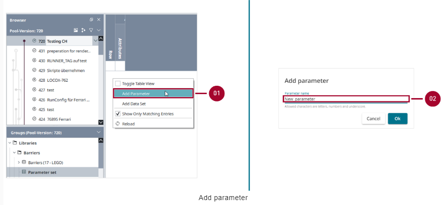
Add, duplicate and remove data sets
새로 생성된 파라미터는 별도의 열(column)으로 생성되어 표시됩니다.
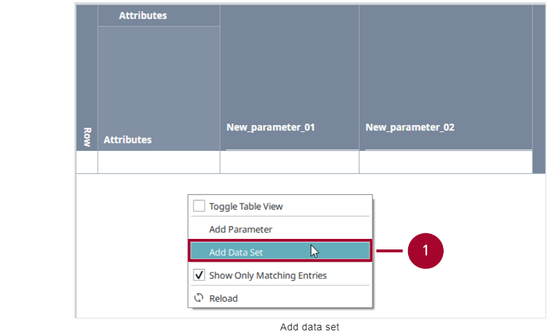
테이블에서 마우스 오른쪽으로 컨텍스트 메뉴를 열고 Add Data Set을 클릭하여 행을 추가할 수 있습니다.
이제 열의 설명(description) 및 속성 그리고 추가된 행에 값을 입력하여 파라미터를 지정할 수 있습니다.
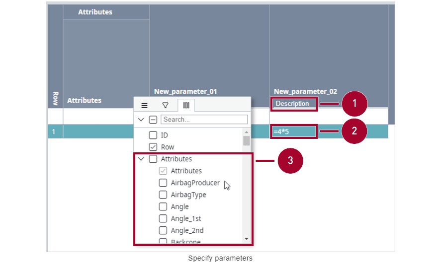
Description(설명) : description은 파라미터 이름 아래의 영역을 더블 클릭하여 변경할 수 있습니다.
Value(값) : 값(value)는 파라미터 열에 대응되는 행의 셀(cell)을 더블 클릭하여 변경할 수 있습니다. ‘=’ 기호를 시작으로 하여 공식(formulas)을 입력할 수 있습니다. 테이블에서는 공식(formulas)만 표시되며 계산된 값은 run preview에서만 표시됩니다.
Attribute(속성) : 속성은 열의 이름에 마우스를 가져갔을 때 나타나는
를 클릭하고 나타나는 팝업(popup) 메뉴에서 탭(tab)에서 선택하여 추가 할 수 있습니다.
공개(public) 상태로 테이블을 편집한 경우 비공개(private) 버전이 새로 만들어집니다. 행(row)의 컨텍스트 메뉴(context menu)에서 data set을 복제하고 제거할 수 도 있습니다.
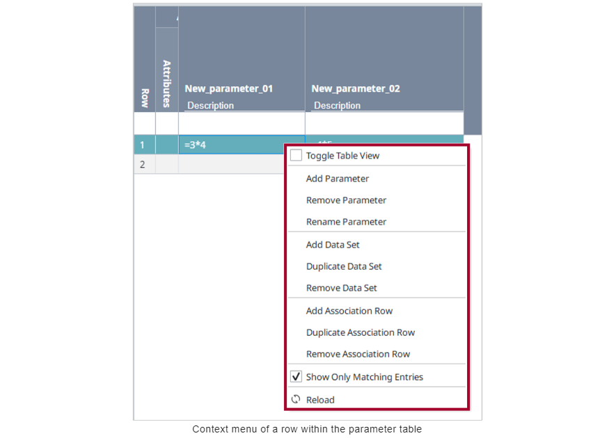
Toggle table view
파라미터 테이블에는 두 가지 보기 옵션을 사용할 수 있습니다. 표 보기를 전환하려면 마우스 오른쪽 버튼을 클릭하여 그리드에서 컨텍스트 메뉴를 열고 Toggle table view을 클릭합니다: 이를 통해 가로(A) 보기와 세로(B) 보기 간에 전환할 수 있습니다.
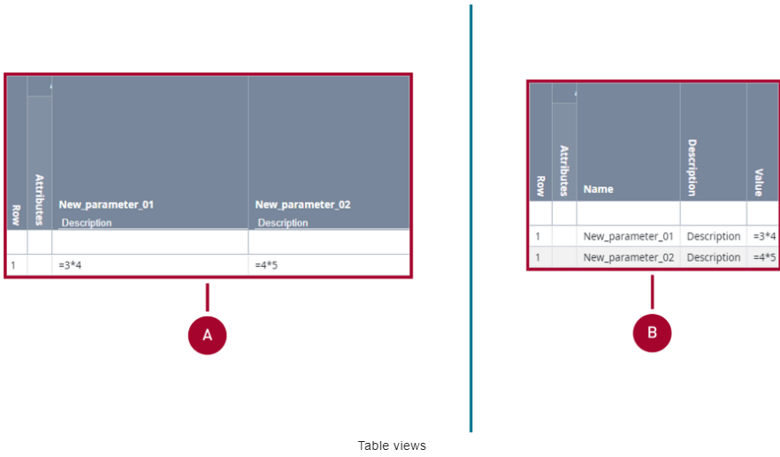
Calculate and reference parameters
Model은 스프레드시트(spreadsheet)와 유사한 파라미터 정의로 작업할 수 있는 가능성을 제공합니다. 이를 위해서는 앞에 ‘=’ 기호를 반드시 사용해야 합니다. 매개변수는 서로를 참조하거나 서로에 대해 오프셋할 수 있습니다(예: =BARRIERE_MOVE_X + BARRIERE_OFFSET_X).
Reference parameters
기본적으로 매개변수는 그 이름으로 참조할 수 있습니다(예: DRIVER_TTF=TTF * 2). 실행 시 TTF 매개변수가 존재하지 않으면 충돌이 발생하므로 어셈블리가 불가능합니다. 또는 DRIVER_TTF=get_parameter_value(“TTF”, default=10) * 2를 통해 TTF를 참조할 수 있습니다. 기본값을 지정할 수 있으며, 이는 실행 중 매개변수 TTF가 존재하지 않는 경우에 사용됩니다.
실행에 매개변수가 있는지 여부는 has_parameter() 함수를 통해 쿼리할 수 있습니다: GURT_TTF=FAHRERGEWICHT / 10 has_parameter(“FAHRERGEWICHT”) else 0.5. 파이썬의 조건부 연산자 구문을 사용해야 한다는 점에 유의하세요.
값을 계산하는 데 사용할 수 있는 옵션은 다음과 같습니다:
Mathematical operators of the basic arithmetic operations
+, -, /, *
Other mathematical operators and functions
Exponents(지수) : =2**2
Square root(제곱근) : =2**0.5
abs(절대값) : =abs(-132)
log(자연로그) : =log(0)
log10 : =log10(0)
sin, cos, tan : =sin(0)
asin, acos, atan: =atan(1)
round(지정된 자릿수로 반올림): =round(124.64324, 2)
math: =math.pi
Operators for editing strings
float: 문자열(string)을 부동소수점(floating point number)으로 변환합니다.
int: 문자열(string)을 정수형(integer)로 변환합니다.
str: 파라미터(parameter)를 문자열(string)로 변환합니다.
len: 문자열(string)의 길이를 가져옵니다.
Operators for processing multiple parameter values
min: 집합(set)에서 가장 작은 수를 가져옵니다. (ex. =min(BARRIERE_MOVE_X, BARRIERE_MOVE_Y, 0))
max: 집합(set)에서 가장 큰 수를 가져옵니다. (ex. =max(BARRIERE_MOVE_X, BARRIERE_MOVE_Y, 100))
sum: 나열된 수의 합을 가져옵니다. (ex. =sum(BARRIERE_MOVE_X, BARRIERE_OFFSET_X))
파라미터들은 실행 구성(run configuration)에서 실행 종속 값을 대신 할 수도 있습니다.
=get_attribute_string(attribute, default): 선택한 실행 구성(run configuration)에서 속성(attribute) 값을 문자열로 검색합니다.
=get_attribute_float(attribute, default): 선택한 실행 구성(run configuration)에서 속성(attribute) 값을 부동 소수점 값으로 가져옵니다.
=get_attribute_value_description(attribute, default): 선택한 실행 구성(run configuration)에서 속성(attribute) 값에 대한 설명(description)을 검색합니다.
기본값(default) 지정은 선택 사항입니다. 속성(attribute)를 찾을 수 없거나 사용하지 않는 경우 기본값(default)이 대신 사용됩니다.
또한 Model은 사전 정의된 파라미터를 생성합니다. 이러한 파라미터는 get_context_value() 함수를 통해 접근할 수 있습니다:
=get_context_value(“RUN_LABEL”)
현재 다음과 같은 사전 정의된 파라미터를 사용할 수 있습니다.
POOL_HISTORYCOMMENT_BODY
POOL_HISTORYCOMMENT_HEADER
POOL_UUID
POOL_VERSION
PREDECESSOR_POOL_VERSION_VERSIONNUMBER
RUN_LABEL
RUN_REFERENCE_NAME
Replace parameters in components
어셈블리(assembly) 단계에서 모델링 파일의 특정 값을 Model에 정의한 값으로 대체할 수 있습니다.
Replace Model parameters
Unformatted replacement
어셈블리(assembly) Model을 사용하면 사용된 모든 요소(component)에서 파라미터 자리 표시자(placeholder)들을 검색합니다.
요소(component)의 파라미터는 자리 표시자(placeholder) [% PARAMETER_NAME %]를 사용하여 정의되며, 여기서 PARAMETER_NAME은 Model에서 파라미터(parameter) 이름입니다. 기본적으로 두개의 교체(replacement) 모드로 구분됩니다:
String: 여는 괄호(‘[’) 위치부터 시작하여 파라미터 정의 대신 파라미터의 내용이 기록됩니다(아래 그림 참조). 파라미터 이름의 길이는 무관하며, 즉 파라미터의 문자열이 기록됩니다. 파라미터 교체되는 동안 값이 잘리거나(clipping) 확장(extension)되지 않습니다.
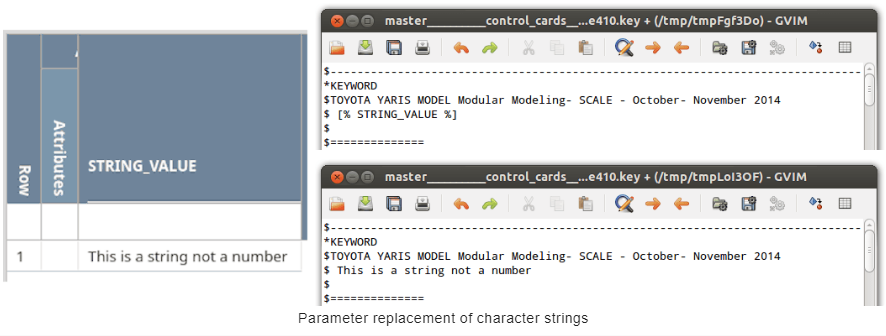
Numbers: 숫자는 파라미터 테이블의 셀(cell)에 작성될 때 “=”로 시작해야 합니다. 그렇지 않으면 문자열 모드가 적용됩니다. 숫자는 최대 8자 길이까지 선행 공백으로 확장할 수 있습니다.
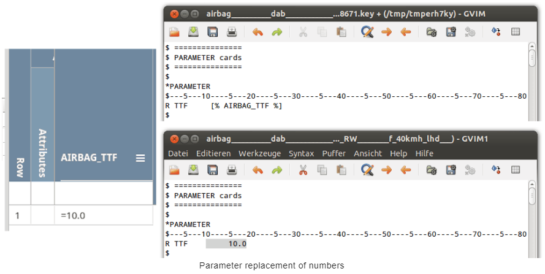
Formatted replacement
형식화된 교체(fommatted replacement)는 교체되는 파라미터의 값에 형식(format)을 적용하여 교체 할 수 있습니다. 형식(format)에 사용되는 구문(syntax)는
Examples
선행되는 수 0이 최대 4자 길이인 Pool 버전: $ [% POOL_VERSION|format(“0>4”) %]
부동 소수점 값의 길이를 소수점 이하 두 자리로 제한 : $ [% POOL_VERSION|format(“.2f”) %]
현재 모든 사용자 정의 파라미터를 서식 지정에 사용할 수 있습니다. 다음과 같은 사전 정의된 매개변수를 사용할 수 있습니다:
POOL_VERSION
PREDECESSOR_POOL_VERSION_VERSIONNUMBER
Predefined parameters
Model은 어셈블리(assembly)에 대해 미리 정의된 매개변수(predefined parameter)를 제공합니다. 여기에는 풀 버전(POOL_VERSION), 실행 이름(RUN_NAME) 등이 포함됩니다. 실행에 존재하는 파라미터 목록은 어셈블리(assembly)에서 생성되어 RUN_NAME.parameters 파일에 저장됩니다. 이러한 파라미터 중 일부는 다른 파라미터 내에서 참조할 수도 있습니다.
Parameter conflicts
파라미터 충돌은 실행 구성(run configuration)에서 파라미터에 여러 값을 할당할 때 발생합니다. 동일한 값을 여러 번 할당하든 다른 값을 할당하든 상관없습니다. 파라미터 충돌은 속성 보기(Properties view)의 파라미터 섹션에서 빨간색으로 표시됩니다. 충돌을 해결하려면 파라미터 테이블에서 실행 구성의 속성 할당과 한 줄만 일치하는지 확인해야 합니다. 파라미터의 모든 항목을 찾으려면 도구 설명(tooltip)이 나타날 때까지 마우스 포인터를 그 위에 갖다 대세요. 여기에는 줄 번호를 포함하여 해당 파라미터가 발생한 모든 파라미터 테이블이 포함됩니다.
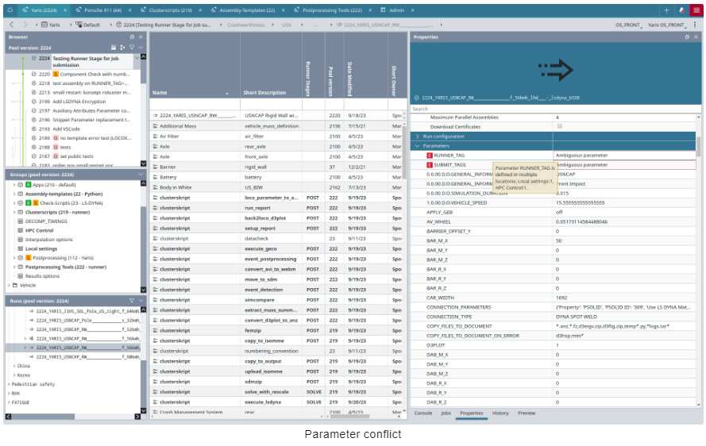
Define parameters depending on user and location
Warning
데크(deck)를 변경하지 않는 프로세스 스크립트(경로, 솔버 제어 등)에 필요한 파라미터만 사용자/위치(user/location) 종속으로 정의해야 하며, 그렇지 않으면 데크(deck)의 재현성이 보장되지 않습니다.
Model의 파라미터는 종종 프로세스를 제어하는 데 사용됩니다: 경로 지정, 솔버 설정 등입니다. 이러한 파라미터는 일반적으로 사용자/위치(user/location)에 따라 달라집니다. 따라서 Model에 이러한 값을 저장하는 것은 최적이 아닙니다: 풀버전의 작성자가 설정한 설정이 다른 위치의 다른 사용자에게 전송될 수 있기 때문입니다.
따라서 사용자/위치(user/location)에 따라 파라미터를 정의할 수 있습니다. 다음 위치가 확인됩니다:
$HOME/.loco-prod/site_parameters.txt (Linux)
LOCO_SITE_PARAMETERS_FILE 환경변수 에 정의된 경로
파일에서 파라미터는 파라미터_이름=파라미터_값 패턴에 따라 한 줄씩 정의됩니다. 문자열, 숫자 및 수식을 정의할 수 있습니다.
Model에서 사용자/위치(user/location) 종속 파라미터는 Model에 정의된 파라미터와 동일하게 표시됩니다. 툴팁(tooltip)에는 사용자/위치(user/location) 종속 파라미터를 읽은 소스 파일이 표시됩니다.
Runs
실행 구성(run configuration)은 특정 로드 케이스(load case)에 대한 자세한 설명을 제공하며 해당 구성 요소(component)를 포함합니다. 일련의 지침으로 생각하면 됩니다. 이러한 지침에는 특정 실행에 필요한 구성 요소(component)를 정의하는 속성(attributes)이 포함됩니다. 실행 구성(run configuration)은 어셈블리(assembly) 프로세스에 필수적입니다.
Difference between a run and a run configuration
실행(run)은 실행 구성(run configuration)을 조합하여 생성된 데이터베이스 개체입니다. 단일 실행 구성을 기반으로 여러 개의 실행을 생성할 수 있습니다. 한 가지 중요한 점은 일단 생성된 어셈블된 실행은 실행 구성과 달리 편집하거나 삭제할 수 없다는 것입니다. 원래 실행 구성이 삭제되더라도 실행은 계속 존재할 수 있으며 계속 어셈블될 수 있습니다.
Note
실행 구성은 케이크 레시피로, 어셈블된(assembled) 실행은 구워진 케이크라고 생각할 수 있습니다.
Show changes
Show changes 확인란(A)를 활성화하면 변경 사항(Changes)이라는 레이블이(label)붙은 추가 열이 표시됩니다.(B)
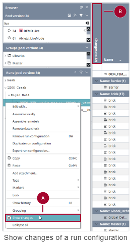
Edit a run configuration
실행 구성(run configuration)의 모든 설정은 Properties view에서 사용할 수 있습니다. 또한 그리드(grid)에서 실행 구성의 속성 값을 편집할 수도 있습니다.
Edit attributes in the grid
실행 구성(run configuration)을 선택하면 그리드(grid)에서 필터(filter) 행 아래의 첫 번째 행에 속성(attribute) 열 아래에 구성된 모든 속성 값이 표시됩니다. 선택한 실행 구성에 새 속성을 수정, 제거 또는 추가할 수 있습니다. 기존 속성을 제거하려면 해당 속성 값을 삭제하면 됩니다.
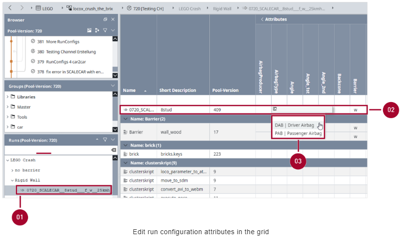
실행 구성(run configuration)을 선택합니다.
표시되는 속성 값이 표시되는 행에서 원하는 항목을 더블 클릭하여 실행 구성(run configuration)의 속성(attribute) 값을 변경합니다.
빈 필드(empty field)에 값을 추가하여 새 속성(attribute)을 추가합니다. 빈 속성(empty attribute) 값은 컴포넌트 매칭(component matching)에 고려되지 않습니다.
Edit attributes in the Properties view
실행 구성(run configuration)을 선택하면 속성 보기(Properties view)에서 실행 구성의 모든 속성과 함께 실행 구성과 관련된 추가 정보를 볼 수 있습니다. 기본 그리드(grid)에서 편집하는 것과 유사한 방식으로 속성 값을 편집할 수도 있습니다.
속성 보기(Properties view)의 실행 구성(run configuration) 섹션 아래에는 실행 구성과 관련된 정보와 함께 모든 속성이 나열됩니다. 속성은 다음과 같이 더 분류됩니다.
Namescheme Attributes
Added Attributes - 사용된 subject가 컨텍스트(context)에 따라 추가로 추가 할 수 있는 속성입니다.
속성(attribute) 값을 정의하기 위해 항목을 두 번 클릭 후 표시되는 드롭다운 메뉴에서 선택 할 수 있습니다.
Select Attribute - 클릭 후 표시되는 드롭 다운 메뉴에서 속성(attribute)을 추가할 수 있습니다.
를 클릭 하여 속성(attribute)을 제거할 수 있습니다.
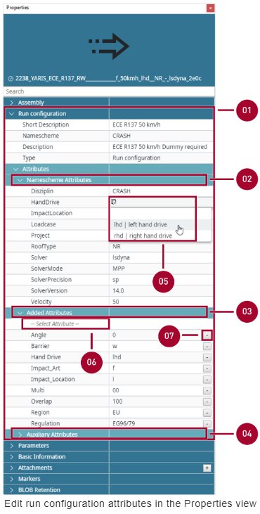
Edit properties of a run configuration
실행 구성(run configuration)의 속성 보기(Properties view)에서 다음과 같은 실행 구성의 속성을 변경할 수 있습니다.
Short Description
Namescheme
Description
Type
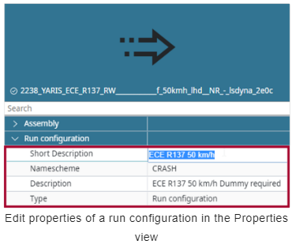
Assembly
A : Assemble locally 실행 구성(run configuration)의 local assembly를 생성합니다.
B : Assembly remotely은 실행 구성의 완성된 assembly를 구성된 HPC 시스템에 보냅니다.
C : Remote data check 데이터 확인을 위한 실행을 구성된 HPC 시스템에 바로 보냅니다.
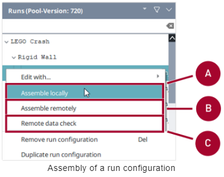
Multi run configuration (MRC)
다중 실행 구성(MRC)는 속성(attribute)값이 변경되는 실행 구성(run configuration)의 모음입니다. Model은 풀 버전(Pool version)의 모든 파라미터 테이블(parameter table)을 검색하고 파라미터 테이블에서 일치하는 각 줄에 대해 하위 실행 구성을 생성합니다. 각 하위 실행 구성은 전체 실행 구성을 나타냅니다. 따라서 MRC는 각 변형(variation)을 수동으로 생성할 필요 없이 실행 구성의 변형을 생성하는데 특히 적합합니다. 응용 가능한 항목에는 견고성(robustness) 조사를 위한 배리어(barrier)의 위치 변화 또는 임팩터(impactor)에 대한 임팩트 영역(impact fields)의 생성이 있습니다.
Create a multi run configuration
단일 실행 구성(single run configuration)에서 다중 실행 구성(MRC)를 생성하기 위해 속성 보기(Properties view)에서 Multi run configuration 타입으로 변경합니다. 타입이 다중 실행 구성으로 설정되면 다중 속성 및 파라미터 테이블이라는 추가 속성이 표시됩니다.
다중 속성(Multi Attribute)를 사용하면 각각 생성되는 실행 구성에 변경되어 적용되어야 하는 속성 값을 할당 할 수 있습니다.
파라미터 테이블(parameter table)은 하위 실행 구성(child run configuration)을 생성할 풀 버전에서 파라미터 테이블을 선택할 수 있도록 합니다. 이 옵션을 명시적으로 정의하지 않으면 하위 실행 구성을 만들 때 풀 버전(Pool version)의 모든 파라미터 테이블이 고려됩니다.
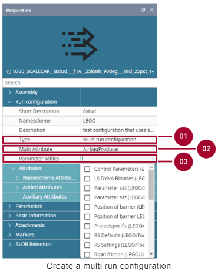
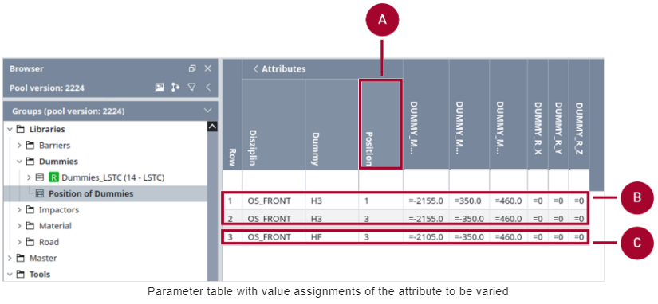
A : 다중 실행 구성에서 각 실행 구성에 변경되는 값으로 적용될 항목의 속성(attribute)입니다.
B : 다중 실행 구성에서 선택한 속성(attribute)에서 일치하는 항목들을 함께 표시합니다.
C : 다중 실행 구성에서 선택한 속성(attribute)에서 일치하지 않는 항목들을 구분하여 표시합니다.
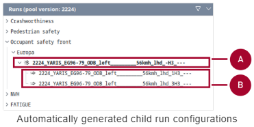
A : 정의된 다중 실행 구성(MRC)입니다.
B : Multi Attribute와 Parameter Tables에서 선택된 항목들에 기반하여 자동으로 생성된 하위 실행 구성(child run configuration)입니다.
Auxiliary attributes
보조 속성(auxiliary attributes)은 실행 구성(run configuration)에 추가 구성 요소를 추가하는 방법을 제공하지만, 이러한 구성 요소는 실행 구성의 속성에 따라 선택해서는 안됩니다.
다음 속성이 있는 풀 버전(Pool version)에 더미 3개가 있는 예시를 살펴보겠습니다.
Component |
Type |
Position |
|---|---|---|
Dummy |
H3 |
1 |
Dummy |
HF |
3 |
Dummy |
H3 |
3 |
로드 케이스(load case)가 위치(position) 1에 H3 더미(Dummy)와 위치 3에 HF 더미로 빌드되는 경우, 실행 구성(ru n configuration)에서 H3 또는 HF 더미 속성 값은 설정할 수 있으나 위치(Position)의 경우 보조 속성(auxiliary attribute)이 없는 실행 구성에서는 이 작업이 불가능합니다.
보조 속성(auxiliary attribute)은 구성 요소 선택에 추가 속성 집합을 적용하여 중복되지 않는 위치(Position)의 두 번째 더미(Dummy) 유형(Type)을 실행 구성에 추가할 수 있도록 합니다.
보조 속성(auxiliary attribute)은 실행 구성(run configuration)의 namescheme 내에 구성해야 합니다. namescheme 내에 여러 개의 보조 속성 그룹을 정의할 수 있지만 하나만 있으면 실질적인 목적에 부합하지 않으므로 적어도 두 개는 정의해야 합니다. 실행 구성에 대해 보조 속성 그룹이 포함된 명명 체계를 선택하면 속성 보기(Properties view)의 실행 구성의 속성 섹션(attribute section) 아래에 보조 속성 섹션이 나타납니다.
A: 보조 속성들은 실행 구성(run configuration) namescheme OS_FRONT에 대해서 구성됩니다.
B: DummyBeltSeat[1]이라는 보조 그룹은 필수 속성인 Dummy 및 Position으로 구성됩니다. 사용자는 각 보조 그룹을 수동으로 활성화해야 합니다. 이 기능은 namescheme에 구성된 특정 보조 그룹을 선택적으로 사용하려는 경우에 유용합니다.
C: 컴포넌트(Components)는 namescheme이나 추가된 속성 대신 보조 속성(auxiliary attribute) 값을 기준으로 선택해야 하는 컴포넌트 유형을 제공합니다. 컴포넌트에서 컴포넌트 유형을 선택하지 않으면 실행 구성의 모든 컴포넌트는 namescheme 및 추가 속성을 기준으로 선택됩니다.
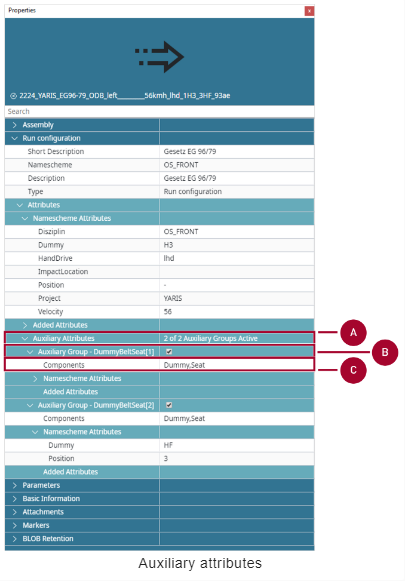
Copying objects
Model에서는 수많은 개체를 복사하여 다른 곳에 붙여넣을 수 있습니다. 구체적인 복사 및 붙여넣기 동작은 복사되는 개체의 유형과 복사 프로세스의 소스 및 대상에 따라 달라집니다. 복사 및 붙여넣기 옵션은 개체의 컨텍스트 메뉴(context menu)에서 찾을 수 있으며, 마우스 오른쪽 버튼으로 클릭하여 열 수 있습니다.
Components
개별 component들은 복사하여 붙여 넣을 수 있습니다.
풀 버전(Pool version)에서 동일한 그룹끼리
풀 버전(Pool version)에서 다른 그룹끼리
동일한 풀(Pool)에서 다른 풀 버전들(Pool versions)끼리
다른 풀(Pool)들끼리
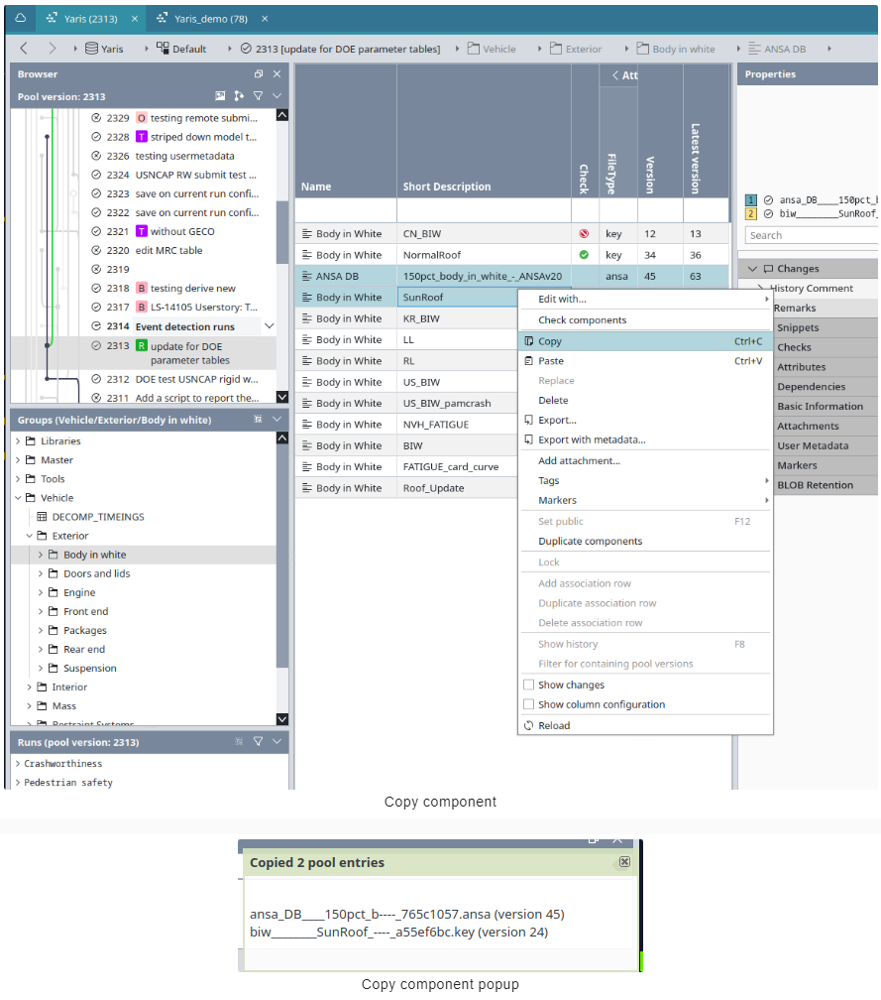
다중 선택(multi-select)을 통해 하나 혹은 여러개의 component를 선택합니다.
선택한 상태에서 마우스 오른쪽 버튼으로 컨텍스트 메뉴(context menu)를 표시하고 Copy를 클릭하거나 Ctrl + C를 누릅니다.
복사가 성공적으로 되었다면, 복사 되었다는 팝업(pop-up) 창이 표시됩니다.
붙여넣을 풀 버전(Pool version)의 Groups view에서 component 그룹을 선택합니다.
선택된 component 그룹의 컨텍스트 메뉴(context menu)에서 Paste 혹은 Ctrl + V를 누릅니다.
Paste 옵션은 붙여넣기 동작의 결과들과 함께 새 Paste 탭이 열립니다.
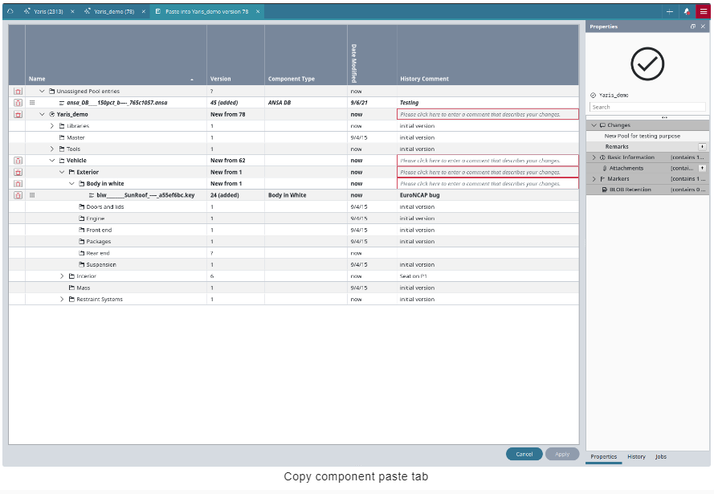
A. 대상 풀(복사된 component를 붙여넣는 곳)의 구성 방식에 따라 Model은 component 유형에 따라 그룹에 component를 자동으로 할당하려고 시도합니다. 결국 사용자는 풀 구성에 따라 대상 풀에서 붙여넣은 component의 위치를 제안받게 됩니다.
B. Model이 대상 풀(Pool)에서 적절한 붙여넣기 위치를 예측할 수 없는 복사된 component는 할당되지 않은 풀 항목으로 표시됩니다. 사용자는 해당 component 유형을 지원하는 그룹에서 드래그 앤 드롭으로 해당 항목을 대상 풀의 적합한 그룹으로 수동으로 이동하거나 component 유형을 변경하여 이 component를 대상 풀에 수용할 수 있도록 해야 합니다. 사용자가 특정 component를 복사하지 않으려는 경우 해당 휴지통 버튼을 눌러 할당되지 않은 풀 항목을 복사 및 붙여넣기 작업에서 제거할 수 있습니다.
C. 또한 사용자는 드래그 앤 드롭을 사용하여 component의 제안된 붙여넣기 위치를 변경할 수 있습니다. 이 변경으로 인해 대상 pool이 구성된 방식에 따라 유형이 변경될 수 있습니다.
D. 동일한 pool 버전 및 그룹에 component를 복제(duplicate)하려면 복사 및 붙여넣기 대신 복제(duplicate)를 사용하세요.
Copying components to another pool version in the same pool
Pool 내의 component를 하나의 pool 버전에서 다른 pool 버전으로 복사할 때 붙여넣은 component의 ID는 그대로 유지됩니다. 예를 들어 “Body in white” component의 버전 72를 pool 버전 800에서 pool 버전 801로 복사하는 경우, pool 버전 801에 component가 존재하지 않는 경우 component 버전 72가 추가됩니다. 구성 요소가 pool 버전 801에 이미 존재하는 경우 이 component 버전은 버전 72로 대체됩니다.
Copying components to a different pool
Component를 pool에서 다른 pool로 복사하면 붙여넣은 component는 새 ID를 갖게 됩니다. 예를 들어 component ‘Body in white’의 버전 72가 pool A에서 pool B로 복사되면 pool B에서 버전 1의 새 component가 만들어집니다.
이 동작의 예외(exception)는 이 component의 이전 component가 이미 복사된 후 다른 pool로 component가 복사되는 경우에 발생합니다. 아래 그림은 이러한 워크플로우의 예를 보여줍니다.
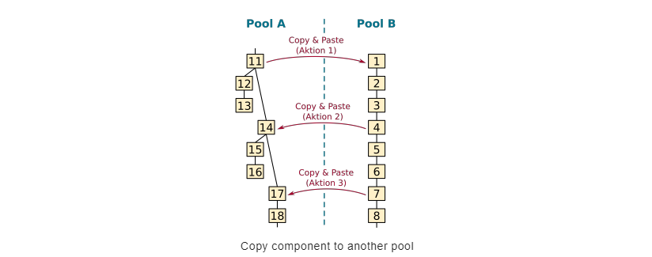
이 예제에서는 처음에 pool A에 버전 번호 11의 component가 있습니다. 이제 버전 번호 11의 component가 pool A에서 pool B로 복사되고 복사된 component는 pool B에서 새 ID와 그에 따른 버전 번호 1을 받습니다. 이제 버전 12와 13의 후속 component가 pool A에 생성되고 버전 2, 3, 4의 후속 component가 pool B에 생성됩니다. 버전 4의 component가 pool B에서 pool A로 복사될 때 복사된 component는 새 ID를 받지 않습니다. Model은 이 component의 이전 버전이 pool A에 존재함을 인식하고 버전 번호 11의 후속으로 component를 복사하고 버전 번호 14를 할당합니다. 이 프로세스는 그림과 같이 계속됩니다.
Run configuration
개별 run configuration은 복사 및 붙여넣기 할 수 있습니다.
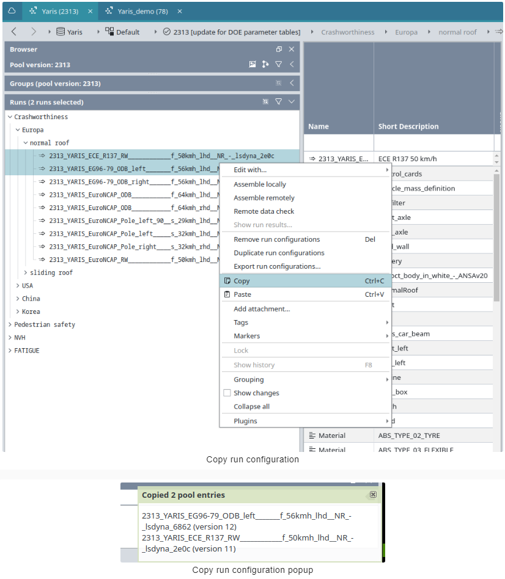
다중 선택으로 run configuration 혹은 multiple run configuration들을 선택하거나 run configuration들의 그룹을 선택합니다.
선택한 상태에서 context 메뉴를 열어 Copy 메뉴를 누르거나 Ctrl+C를 누릅니다.
만약 복사가 성공한다면 run configuration이 복사되었다는 팝업 메세지 창이 나타납니다.
동일한 model 탭에서 붙여넣을 pool 버전을 선택하거나 다른 pool의 다른 model 탭을 선택합니다.
붙여넣을 pool 버전 혹은 Runs view의 context 메뉴를 열어 Paste를 선택하거나 Ctrl+V를 누릅니다.
Paste 옵션은 붙여넣기 동작의 결과와 함께 새 Paste 탭이 열릴 것입니다.
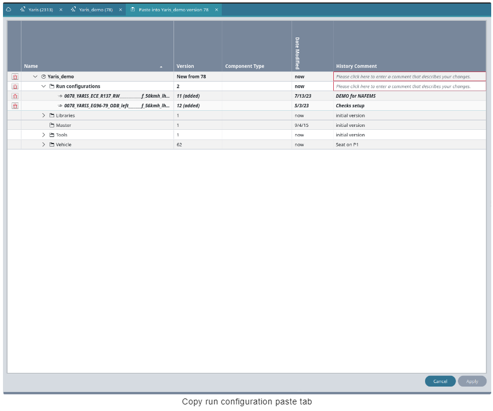
A. Paste 탭에서 **Run configurations라고 일컬어지는 새 그룹이 나타나고 복사된 run configuration들이 목록으로 표시됩니다.
B. 사용자들은 trash bin 버튼을 클릭하여 복사되기를 원하지 않는 항목들을 run configuration들을 제거할 수 있습니다.
C. Run configuration을 동일한 pool 버전에 복제(duplicate) 하고자 한다면 Copy와 Paste 대신에 Duplicate run configuration을 사용하세요
Parameter table
Parameter table들은 복사 및 붙여넣기를 할 수 있습니다.
하나 혹은 두개 이상의 parameter table을 선택합니다.
선택한 상태의 항목에서 context 메뉴를 열어 Copy 혹은 Ctrl + C를 누릅니다.
복사가 성공하였다면 복사된 parameter table들과 함께 pop-up 창이 표시됩니다.
model 탭에서 붙여넣기를 할 pool 버전 혹은 그룹을 선택합니다.
붙여넣기 할 pool, 그룹에서 context 메뉴를 열어 Paste를 선택하거나 Ctrl + V를 누릅니다.
붙여넣기 동작의 결과와 함께 새 Paste 탭이 나타납니다.
A. Paste탭에서 붙여넣기된 parameter table들은 붙여넣은 그룹 레벨 아래에 표시됩니다.
B. 사용자들은 드래그 앤 드롭으로 다른 그룹으로 이동시킬 수 있습니다.
C. Trash bin 버튼으로 붙여넣기를 원하지 않을 경우 parameter table 항목들을 제거할 수 있습니다.
D. 동일한 pool 버전과 그룹에서 parameter table을 복제(duplicate)할 때에는 Copy와 Paste 대신에 Duplicate paramter table을 사용하세요.
Pool Version
Model에서 완전히 pool 버전을 복사하는 것은 pool 버전의 component들과 parameter table들 그리고 run configuration들을 복사하는 것입니다.
Pool 버전들의 복사, 붙여넣기는 위에서 설명한 component, parameter table, runconfiguration의 내용과 같습니다.
User interface
Tab bars
Operation concept
Model은 객체 지향적 application입니다. object를 가리키거나 클릭하면 동작이 트리거(trigger)됩니다. object에 대한 기능은 context 메뉴(마우스 오른쪽 클릭)를 통해 사용할 수 있습니다. object에 따라 다른 기능을 사용할 수 있습니다. 여러 object를 선택하는 경우(다중 선택) 선택한 object에 유효한 기능만 제공됩니다.
Overview
{“intxt-image”}Model의 사용자 인터페이스(user interface) 다음과 같이 구성됩니다.
파랑 : tab bar.
회색 : navigation bar.
browser, grid 및 properties와 같은 창들(windows)
Close and re-open windows
windows들은 필요에 따라 닫거나 다시 열 수 있습니다.
회색 navigation bar에서 마우스 오른쪽 클릭으로 context 메뉴를 표시합니다.
표시하고자 하는 windows를 체크 선택합니다.
Rearrange the windows
Window들은 드래그 앤 드롭으로 이동할 수 있습니다. 이를 위해 반드시 마우스로 window의 탭(tab)을 잡고 원하는 위치로 드래그 해야 합니다. window들을 프레임워크(framework)의 나머지 부분과 완전히 분리 할 수도 있습니다.
window가 위치할 수 있는 영력들은 파란색으로 표시된 부분입니다.
두개 이상의 window들이 같은 위치에 있도록 한다면 탭(tab)으로 window들이 그룹지어 집니다.
Browser
Browser는 pool 관련 데이터를 표시하고 선택하는 데 사용됩니다. 파일 관리자와 비슷한 기능을 합니다. 항목을 선택하면 해당 항목의 콘텐츠가 그리드(grid)에 표시됩니다. 탐색 모음도 현재 선택 내용을 반영하도록 변경됩니다.
Browser는 세개의 영역으로 구성됩니다.
A: Pool version
B: Groups
C: Runs
Pool version
Pool version 영역에는 선택한 pool에 할당된 pool 버전 목록이 표시됩니다. pool 버전을 클릭하면 Groups 및 Runs 영역도 해당 pool 버전과 연결된 데이터를 표시하도록 변경됩니다.
각 선들은 다음 정보에 대한 pool version을 보여줍니다.
A: Team status icon
Public
Private (foreign), not writable
Private (own), writable. Entries with this status are displayed in bold.
Live. Entries with this stauts are displayed in bold
B: Pool version number
C: Preview image (optional)
D: History comment